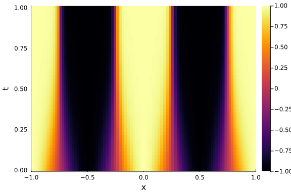
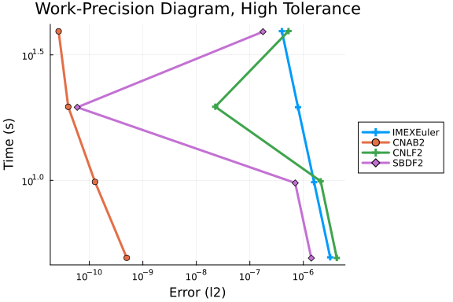
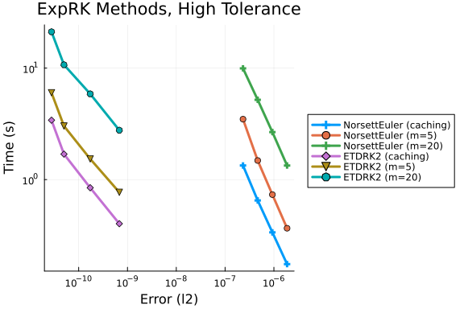
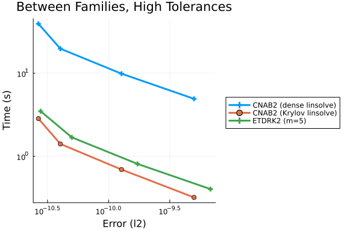
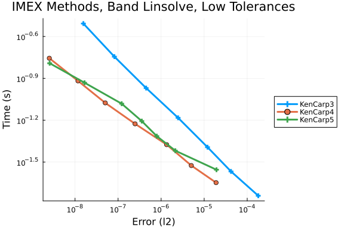
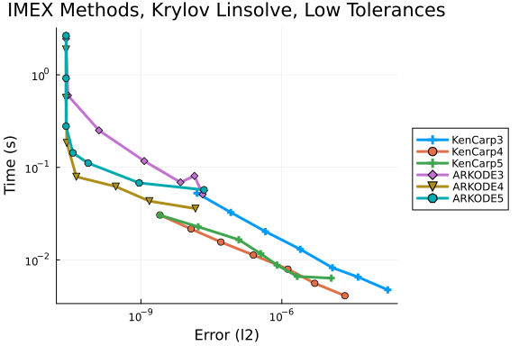
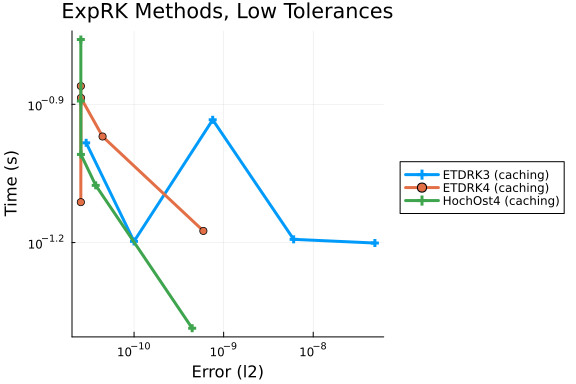
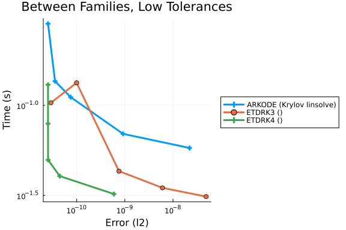

Allen-Cahn Pseudospectral Methods Work-Precision Diagrams
Problem Description
The Allen-Cahn partial differential equation is solved on the domain $[-L, L] \times [0, T] \in \mathbb R \times R,~L = 1,~T = 1$, with the following initial and boundary conditions:
\[\begin{aligned} \partial_t u(t,x) & = u(t,x) - u^3(t,x) + \epsilon \partial_x^2 u(t,x), \\ u(0,x) & = \cos(2\pi x), \\ u(t,-L) & = u(t,L) = 1. \end{aligned}\]
The spatial derivative operators are represented via Chebyshev pseudospectral approximations. Here, the domain is discretized by projecting on a cosine-spaced grid of points $x_s \in [-1, 1]$; the solution is approximated on this grid via linear combinations of Chebyshev polynomial basis functions in space. The coefficient $p = 3,~\epsilon = 10^{-3}$ is chosen to produce `interesting' behavior as seen in the reference solution below.
\[\begin{aligned} \frac{du}{dt} & = p(u(t,x) - u^3(t,x)) + \epsilon D_x^2 u(t,x), \\ u(0,x_s) & = \cos(2\pi x_s), \\ u(t,-L) & = u(t,L) = 1. \end{aligned}\]
Implementation
using OrdinaryDiffEq
using OrdinaryDiffEqBDF, OrdinaryDiffEqExponentialRK, OrdinaryDiffEqIMEXMultistep, OrdinaryDiffEqRosenbrock, OrdinaryDiffEqSDIRK
using DiffEqDevTools
using SciMLOperators
using LinearSolve
using LinearAlgebra
using SparseArrays
using Sundials
using ClassicalOrthogonalPolynomials
using Plots
gr();# Nonlinear component of vector field
function f_nonlinear!(du, u, p, t)
M, D0, alpha, tmp = p
Tu = D0 * u # Pseudo-spectral representation of solution
@. tmp[2:end-1] = alpha * (Tu - Tu^3)
ldiv!(du, M, tmp) # Solve the linear system M * du = tmp
end
function allen_cahn(n, eps)
T = ChebyshevT() # Chebyshev basis
x1 = reverse(ChebyshevGrid{1}(n - 2)) # 1st kind points, sorted
x2 = reverse(ChebyshevGrid{2}(n)) # 2nd kind points, sorted
V = T[x2, 1:n] # Vandermonde matrix, its inverse is transform from values to coefficients
D0 = diff(T, 0)[x1, 1:n] / V # discretisation of identity matrix
D2 = diff(T, 2)[x1, 1:n] / V # 2nd derivative from x2 to x1
B_l = [1; zeros(n-1)]' # Left Dirichlet conditions
B_r = [zeros(n-1); 1]' # Right Dirichlet
M = lu([B_l; D0; B_r]) # Mass matrix for the problem
u0 = cos.(2π * x2) # Initial condition
alpha = 3.0 # Time scaling factor
D2_bc = [zeros(1, n); D2; zeros(1, n)] # 2nd derivative with Dirichlet conditions
# Problem setup
prob = SplitODEProblem(
MatrixOperator(eps * (M \ D2_bc)), # Linear operator with mass matrix inversion
f_nonlinear!,
u0, (0.0, 1.0),
(M, D0, alpha, similar(u0))
)
return x2, prob
end;Reference Solution
N = 128
eps = 1e-3
xs, prob = allen_cahn(N, eps);
@time sol = solve(prob, Rodas5(autodiff=AutoFiniteDiff()); dt=1e-4, reltol=1e-12, abstol=1e-12);
test_sol = TestSolution(sol); # Reference solution for error estimation
tslices = LinRange(prob.tspan..., 50)
ys = mapreduce(sol, hcat, tslices)
heatmap(xs, tslices, ys', xlabel="x", ylabel="t")7.733754 seconds (6.16 M allocations: 488.044 MiB, 2.81% gc time, 86.33%
compilation time)
Work-Precision Diagrams
High Tolerances
Implicit-Explicit Methods
abstols = 0.1 .^ (5:8) # all fixed dt methods so these don't matter much
reltols = 0.1 .^ (1:4)
multipliers = 0.5 .^ (0:3)
setups = [
Dict(:alg => IMEXEuler(), :dts => 1e-4 * multipliers),
Dict(:alg => CNAB2(), :dts => 1e-4 * multipliers),
Dict(:alg => CNLF2(), :dts => 1e-4 * multipliers),
Dict(:alg => SBDF2(), :dts => 1e-4 * multipliers),
]
labels = hcat(
"IMEXEuler",
"CNAB2",
"CNLF2",
"SBDF2",
)
@time wp = WorkPrecisionSet(prob, abstols, reltols, setups;
print_names=true, names=labels, numruns=5, error_estimate=:l2,
save_everystep=false, appxsol=test_sol, maxiters=Int(1e5));
plot(wp, label=labels, markershape=:auto, title="Work-Precision Diagram, High Tolerance")IMEXEuler
CNAB2
CNLF2
SBDF2
98.883362 seconds (21.57 M allocations: 4.171 GiB, 2.64% gc time, 14.00% c
ompilation time: <1% of which was recompilation)
Exponential Integrators
abstols = 0.1 .^ (5:8) # all fixed dt methods so these don't matter much
reltols = 0.1 .^ (1:4)
multipliers = 0.5 .^ (0:3)
setups = [
Dict(:alg => NorsettEuler(), :dts => 1e-4 * multipliers),
Dict(:alg => NorsettEuler(krylov=true, m=5), :dts => 1e-4 * multipliers),
Dict(:alg => NorsettEuler(krylov=true, m=20), :dts => 1e-4 * multipliers),
Dict(:alg => ETDRK2(), :dts => 1e-4 * multipliers),
Dict(:alg => ETDRK2(krylov=true, m=5), :dts => 1e-4 * multipliers),
Dict(:alg => ETDRK2(krylov=true, m=20), :dts => 1e-4 * multipliers)
]
labels = hcat(
"NorsettEuler (caching)",
"NorsettEuler (m=5)",
"NorsettEuler (m=20)",
"ETDRK2 (caching)",
"ETDRK2 (m=5)",
"ETDRK2 (m=20)"
)
@time wp = WorkPrecisionSet(prob, abstols, reltols, setups;
print_names=true, names=labels, numruns=5, error_estimate=:l2,
save_everystep=false, appxsol=test_sol, maxiters=Int(1e5));
plot(wp, label=labels, markershape=:auto, title="ExpRK Methods, High Tolerance")NorsettEuler (caching)
NorsettEuler (m=5)
NorsettEuler (m=20)
ETDRK2 (caching)
ETDRK2 (m=5)
ETDRK2 (m=20)
319.401882 seconds (38.60 M allocations: 13.497 GiB, 1.24% gc time, 5.19% c
ompilation time)
Comparisons Between Families
abstols = 0.1 .^ (5:8) # all fixed dt methods so these don't matter much
reltols = 0.1 .^ (1:4)
multipliers = 0.5 .^ (0:3)
setups = [
Dict(:alg => CNAB2(), :dts => 1e-4 * multipliers),
Dict(:alg => CNAB2(linsolve=KrylovJL_GMRES()), :dts => 1e-4 * multipliers),
Dict(:alg => ETDRK2(), :dts => 1e-4 * multipliers),
]
labels = hcat(
"CNAB2 (dense linsolve)",
"CNAB2 (Krylov linsolve)",
"ETDRK2 (m=5)",
)
@time wp = WorkPrecisionSet(prob, abstols, reltols, setups;
print_names=true, names=labels, numruns=5, error_estimate=:l2,
save_everystep=false, appxsol=test_sol, maxiters=Int(1e5));
plot(wp, label=labels, markershape=:auto, title="Between Families, High Tolerances")CNAB2 (dense linsolve)
CNAB2 (Krylov linsolve)
ETDRK2 (m=5)
84.316435 seconds (10.96 M allocations: 6.302 GiB, 3.88% gc time, 3.93% co
mpilation time)
Low Tolerances
Implicit-Explicit Methods
Dense/banded linear solvers.
abstols = 0.1 .^ (7:13)
reltols = 0.1 .^ (4:10)
setups = [
Dict(:alg => KenCarp3()),
Dict(:alg => KenCarp4()),
Dict(:alg => KenCarp5()),
#Dict(:alg => ARKODE(Sundials.Implicit(), order=3, linear_solver=:Band, jac_upper=1, jac_lower=1)),
#Dict(:alg => ARKODE(Sundials.Implicit(), order=4, linear_solver=:Band, jac_upper=1, jac_lower=1)),
#Dict(:alg => ARKODE(Sundials.Implicit(), order=5, linear_solver=:Band, jac_upper=1, jac_lower=1))
]
labels = hcat(
"KenCarp3",
"KenCarp4",
"KenCarp5",
#"ARKODE3",
#"ARKODE4",
#"ARKODE5",
)
@time wp = WorkPrecisionSet(prob, abstols, reltols, setups;
print_names=true, names=labels, numruns=5, error_estimate=:l2,
save_everystep=false, appxsol=test_sol, maxiters=Int(1e5));
plot(wp, label=labels, markershape=:auto, title="IMEX Methods, Band Linsolve, Low Tolerances")KenCarp3
KenCarp4
KenCarp5
45.258599 seconds (21.36 M allocations: 1.425 GiB, 1.14% gc time, 84.07% c
ompilation time)
Krylov linear solvers.
abstols = 0.1 .^ (7:13)
reltols = 0.1 .^ (4:10)
setups = [
Dict(:alg => KenCarp3(linsolve=KrylovJL_GMRES())),
Dict(:alg => KenCarp4(linsolve=KrylovJL_GMRES())),
Dict(:alg => KenCarp5(linsolve=KrylovJL_GMRES())),
Dict(:alg => ARKODE(Sundials.Implicit(), order=3, linear_solver=:GMRES)),
Dict(:alg => ARKODE(Sundials.Implicit(), order=4, linear_solver=:GMRES)),
Dict(:alg => ARKODE(Sundials.Implicit(), order=5, linear_solver=:GMRES)),
]
labels = hcat(
"KenCarp3",
"KenCarp4",
"KenCarp5",
"ARKODE3",
"ARKODE4",
"ARKODE5",
)
@time wp = WorkPrecisionSet(prob, abstols, reltols, setups;
print_names=true, names=labels, numruns=5, error_estimate=:l2,
save_everystep=false, appxsol=test_sol, maxiters=Int(1e5));
plot(wp, label=labels, markershape=:auto, title="IMEX Methods, Krylov Linsolve, Low Tolerances")KenCarp3
KenCarp4
KenCarp5
ARKODE3
ARKODE4
ARKODE5
102.026365 seconds (63.94 M allocations: 3.787 GiB, 1.78% gc time, 38.74% c
ompilation time)
Exponential Integrators
abstols = 0.1 .^ (7:11) # all fixed dt methods so these don't matter much
reltols = 0.1 .^ (4:8)
multipliers = 0.5 .^ (0:4)
setups = [
Dict(:alg => ETDRK3(), :dts => 1e-2 * multipliers),
Dict(:alg => ETDRK4(), :dts => 1e-2 * multipliers),
Dict(:alg => HochOst4(), :dts => 1e-2 * multipliers),
]
labels = hcat(
"ETDRK3 (caching)",
"ETDRK4 (caching)",
"HochOst4 (caching)",
)
@time wp = WorkPrecisionSet(prob, abstols, reltols, setups;
print_names=true, names=labels, numruns=5, error_estimate=:l2,
save_everystep=false, appxsol=test_sol, maxiters=Int(1e5));
plot(wp, label=labels, markershape=:auto, title="ExpRK Methods, Low Tolerances")ETDRK3 (caching)
ETDRK4 (caching)
HochOst4 (caching)
18.118219 seconds (10.63 M allocations: 1.848 GiB, 2.67% gc time, 50.80% c
ompilation time)
Comparisons Between Families
abstols = 0.1 .^ (7:11)
reltols = 0.1 .^ (4:8)
multipliers = 0.5 .^ (0:4)
setups = [
Dict(:alg => ARKODE(Sundials.Implicit(), order=5, linear_solver=:GMRES)),
Dict(:alg => ETDRK3(), :dts => 1e-2 * multipliers),
Dict(:alg => ETDRK4(), :dts => 1e-2 * multipliers)
]
labels = hcat("ARKODE (Krylov linsolve)", "ETDRK3 ()", "ETDRK4 ()")
@time wp = WorkPrecisionSet(prob, abstols, reltols, setups;
print_names=true, names=labels, numruns=5, error_estimate=:l2,
save_everystep=false, appxsol=test_sol, maxiters=Int(1e5));
plot(wp, label=labels, markershape=:auto, title="Between Families, Low Tolerances")ARKODE (Krylov linsolve)
ETDRK3 ()
ETDRK4 ()
9.413771 seconds (3.77 M allocations: 893.823 MiB, 3.01% gc time, 0.07% c
ompilation time)
Appendix
These benchmarks are a part of the SciMLBenchmarks.jl repository, found at: https://github.com/SciML/SciMLBenchmarks.jl. For more information on high-performance scientific machine learning, check out the SciML Open Source Software Organization https://sciml.ai.
To locally run this benchmark, do the following commands:
using SciMLBenchmarks
SciMLBenchmarks.weave_file("benchmarks/SimpleHandwrittenPDE","allen_cahn_spectral_wpd.jmd")Computer Information:
Julia Version 1.10.12
Commit d93beab124c (2026-08-15 10:29 UTC)
Build Info:
Official https://julialang.org/ release
Platform Info:
OS: Linux (x86_64-linux-gnu)
CPU: 128 × AMD EPYC 7502 32-Core Processor
WORD_SIZE: 64
LIBM: libopenlibm
LLVM: libLLVM-15.0.7 (ORCJIT, znver2)
Threads: 128 default, 0 interactive, 64 GC (on 128 virtual cores)
Environment:
JULIA_NUM_THREADS = auto
Package Information:
Status `~/github-runners/amdci3-1/_work/SciMLBenchmarks.jl/SciMLBenchmarks.jl/benchmarks/SimpleHandwrittenPDE/Project.toml`
[47edcb42] ADTypes v1.24.0
⌃ [2169fc97] AlgebraicMultigrid v2.0.1
[b30e2e7b] ClassicalOrthogonalPolynomials v0.15.20
⌃ [f3b72e0c] DiffEqDevTools v3.4.0
[40713840] IncompleteLU v0.2.1
⌃ [7f56f5a3] LSODA v1.1.0
⌃ [7ed4a6bd] LinearSolve v5.15.0
⌃ [1dea7af3] OrdinaryDiffEq v7.7.0
⌃ [6ad6398a] OrdinaryDiffEqBDF v2.4.4
⌃ [bbf590c4] OrdinaryDiffEqCore v4.15.0
⌃ [e0540318] OrdinaryDiffEqExponentialRK v2.3.0
⌃ [5960d6e9] OrdinaryDiffEqFIRK v2.8.0
⌃ [d28bc4f8] OrdinaryDiffEqHighOrderRK v2.2.0
⌃ [9f002381] OrdinaryDiffEqIMEXMultistep v2.2.0
⌅ [d4b830b4] OrdinaryDiffEqMultirate v2.7.0
⌃ [43230ef6] OrdinaryDiffEqRosenbrock v2.7.0
⌃ [2d112036] OrdinaryDiffEqSDIRK v2.9.0
[358294b1] OrdinaryDiffEqStabilizedRK v2.6.0
[91a5bcdd] Plots v1.41.7
⌃ [31c91b34] SciMLBenchmarks v0.1.3
[c0aeaf25] SciMLOperators v1.30.0
⌃ [9f842d2f] SparseConnectivityTracer v1.2.2
[0a514795] SparseMatrixColorings v0.4.27
⌃ [9f78cca6] SummationByPartsOperators v0.5.96
[c3572dad] Sundials v6.6.0
[37e2e46d] LinearAlgebra
[2f01184e] SparseArrays v1.10.0
Info Packages marked with ⌃ and ⌅ have new versions available. Those with ⌃ may be upgradable, but those with ⌅ are restricted by compatibility constraints from upgrading. To see why use `status --outdated`And the full manifest:
Status `~/github-runners/amdci3-1/_work/SciMLBenchmarks.jl/SciMLBenchmarks.jl/benchmarks/SimpleHandwrittenPDE/Manifest.toml`
[47edcb42] ADTypes v1.24.0
[14f7f29c] AMD v0.5.3
[621f4979] AbstractFFTs v1.5.0
[7d9f7c33] Accessors v0.1.45
[79e6a3ab] Adapt v4.7.0
⌃ [2169fc97] AlgebraicMultigrid v2.0.1
[66dad0bd] AliasTables v1.1.3
[dce04be8] ArgCheck v2.5.0
⌃ [4fba245c] ArrayInterface v7.30.0
[4c555306] ArrayLayouts v1.12.2
[15f4f7f2] AutoHashEquals v2.2.0
⌃ [aae01518] BandedMatrices v1.11.0
[0e736298] Bessels v0.2.8
[b2a6c25c] BinaryHeaps v1.1.0
[d1d4a3ce] BitFlags v0.1.10
[62783981] BitTwiddlingConvenienceFunctions v0.1.6
[8e7c35d0] BlockArrays v1.10.0
[ffab5731] BlockBandedMatrices v0.13.5
⌃ [70df07ce] BracketingNonlinearSolve v1.12.5
[fa961155] CEnum v0.5.0
[2a0fbf3d] CPUSummary v0.2.7
[b30e2e7b] ClassicalOrthogonalPolynomials v0.15.20
[fb6a15b2] CloseOpenIntervals v0.1.13
[944b1d66] CodecZlib v0.7.9
[35d6a980] ColorSchemes v3.31.0
[3da002f7] ColorTypes v0.12.1
[c3611d14] ColorVectorSpace v0.11.0
[5ae59095] Colors v0.13.1
[38540f10] CommonSolve v0.2.14
[bbf7d656] CommonSubexpressions v0.3.1
[f70d9fcc] CommonWorldInvalidations v1.2.0
[34da2185] Compat v4.18.1
[b152e2b5] CompositeTypes v0.1.4
[a33af91c] CompositionsBase v0.1.2
[2569d6c7] ConcreteStructs v0.2.8
[f0e56b4a] ConcurrentUtilities v2.6.0
[8f4d0f93] Conda v1.10.3
[187b0558] ConstructionBase v1.6.0
⌃ [7ae1f121] ContinuumArrays v0.20.9
[d38c429a] Contour v0.6.3
[adafc99b] CpuId v0.3.1
[717857b8] DSP v0.8.6
[9a962f9c] DataAPI v1.16.0
[864edb3b] DataStructures v0.19.6
[e2d170a0] DataValueInterfaces v1.0.0
[8bb1440f] DelimitedFiles v1.9.1
⌃ [2b5f629d] DiffEqBase v7.18.2
⌃ [f3b72e0c] DiffEqDevTools v3.4.0
⌃ [77a26b50] DiffEqNoiseProcess v5.36.0
[163ba53b] DiffResults v1.1.0
[b552c78f] DiffRules v1.16.0
[a0c0ee7d] DifferentiationInterface v0.7.21
[31c24e10] Distributions v0.25.131
[ffbed154] DocStringExtensions v0.9.5
[5b8099bc] DomainSets v0.8.1
[4e289a0a] EnumX v1.0.7
[f151be2c] EnzymeCore v0.8.21
[460bff9d] ExceptionUnwrapping v0.1.11
⌃ [d4d017d3] ExponentialUtilities v1.35.0
[e2ba6199] ExprTools v0.1.11
[c87230d0] FFMPEG v0.4.5
[7a1cc6ca] FFTW v1.10.0
[7034ab61] FastBroadcast v1.4.0
[9aa1b823] FastClosures v0.3.2
[442a2c76] FastGaussQuadrature v1.3.0
[a4df4552] FastPower v1.5.0
[057dd010] FastTransforms v0.17.2
[1a297f60] FillArrays v1.17.0
[64ca27bc] FindFirstFunctions v3.2.1
[6a86dc24] FiniteDiff v2.33.0
⌅ [53c48c17] FixedPointNumbers v0.8.6
[1fa38f19] Format v1.3.7
[f6369f11] ForwardDiff v1.4.5
[a85aefff] FunctionMaps v0.1.2
[069b7b12] FunctionWrappers v1.1.3
[77dc65aa] FunctionWrappersWrappers v1.13.0
[46192b85] GPUArraysCore v0.2.0
⌃ [28b8d3ca] GR v0.73.26
⌃ [a0844989] Gamma v1.1.0
[a8297547] GenericFFT v0.1.7
⌃ [c145ed77] GenericSchur v0.5.6
[d7ba0133] Git v1.5.0
[42e2da0e] Grisu v1.0.2
⌅ [cd3eb016] HTTP v1.11.0
⌅ [eafb193a] Highlights v0.5.3
[3e5b6fbb] HostCPUFeatures v0.1.18
[34004b35] HypergeometricFunctions v0.3.30
[7073ff75] IJulia v1.34.4
[615f187c] IfElse v0.1.1
[40713840] IncompleteLU v0.2.1
⌃ [4858937d] InfiniteArrays v0.15.15
[cde9dba0] InfiniteLinearAlgebra v0.10.3
⌃ [e1ba4f0e] Infinities v0.1.12
[8197267c] IntervalSets v0.7.14
[3587e190] InverseFunctions v0.1.17
[92d709cd] IrrationalConstants v0.2.6
[c8e1da08] IterTools v1.10.0
[82899510] IteratorInterfaceExtensions v1.0.0
[1019f520] JLFzf v0.1.11
[692b3bcd] JLLWrappers v1.8.0
⌅ [682c06a0] JSON v0.21.4
[ba0b0d4f] Krylov v0.10.9
⌃ [2faa5264] LHLFactorization v2.2.0
⌃ [7f56f5a3] LSODA v1.1.0
[b964fa9f] LaTeXStrings v1.4.1
[23fbe1c1] Latexify v0.16.12
[10f19ff3] LayoutPointers v0.1.17
[5078a376] LazyArrays v2.12.0
[d7e5e226] LazyBandedMatrices v0.11.10
[87fe0de2] LineSearch v0.1.16
⌃ [7ed4a6bd] LinearSolve v5.15.0
⌃ [2ab3a3ac] LogExpFunctions v0.3.29
[e6f89c97] LoggingExtras v1.2.0
[bdcacae8] LoopVectorization v0.12.174
[1914dd2f] MacroTools v0.5.16
[d125e4d3] ManualMemory v0.1.8
[a3b82374] MatrixFactorizations v3.1.3
[bb5d69b7] MaybeInplace v0.1.8
[739be429] MbedTLS v1.1.10
[442fdcdd] Measures v0.3.3
[e1d29d7a] Missings v1.2.0
[46d2c3a1] MuladdMacro v0.2.7
[ffc61752] Mustache v1.0.21
[77ba4419] NaNMath v1.1.4
⌃ [8913a72c] NonlinearSolve v4.28.0
⌃ [be0214bd] NonlinearSolveBase v2.47.0
⌃ [5959db7a] NonlinearSolveFirstOrder v2.4.0
⌃ [9a2c21bd] NonlinearSolveQuasiNewton v1.15.1
⌃ [26075421] NonlinearSolveSpectralMethods v1.8.0
[6fe1bfb0] OffsetArrays v1.17.0
[4d8831e6] OpenSSL v1.6.1
⌅ [bac558e1] OrderedCollections v1.8.2
⌃ [1dea7af3] OrdinaryDiffEq v7.7.0
⌃ [6ad6398a] OrdinaryDiffEqBDF v2.4.4
⌃ [bbf590c4] OrdinaryDiffEqCore v4.15.0
⌃ [50262376] OrdinaryDiffEqDefault v2.5.0
[4302a76b] OrdinaryDiffEqDifferentiation v3.11.4
⌃ [e0540318] OrdinaryDiffEqExponentialRK v2.3.0
⌃ [5960d6e9] OrdinaryDiffEqFIRK v2.8.0
⌃ [d28bc4f8] OrdinaryDiffEqHighOrderRK v2.2.0
⌃ [9f002381] OrdinaryDiffEqIMEXMultistep v2.2.0
⌃ [1344f307] OrdinaryDiffEqLowOrderRK v2.2.3
⌅ [d4b830b4] OrdinaryDiffEqMultirate v2.7.0
[127b3ac7] OrdinaryDiffEqNonlinearSolve v2.9.4
⌃ [43230ef6] OrdinaryDiffEqRosenbrock v2.7.0
⌃ [b4bd8bb3] OrdinaryDiffEqRosenbrockTableaus v2.4.1
⌃ [2d112036] OrdinaryDiffEqSDIRK v2.9.0
[358294b1] OrdinaryDiffEqStabilizedRK v2.6.0
⌃ [b1df2697] OrdinaryDiffEqTsit5 v2.1.3
⌃ [79d7bb75] OrdinaryDiffEqVerner v2.4.0
[90014a1f] PDMats v0.11.41
⌅ [d96e819e] Parameters v0.12.3
⌅ [69de0a69] Parsers v2.8.7
[ccf2f8ad] PlotThemes v3.3.0
[995b91a9] PlotUtils v1.4.4
[91a5bcdd] Plots v1.41.7
[e409e4f3] PoissonRandom v0.4.13
[f517fe37] Polyester v0.7.19
[1d0040c9] PolyesterWeave v0.2.2
[c74db56a] PolynomialBases v0.4.28
⌃ [f27b6e38] Polynomials v4.1.1
⌃ [d236fae5] PreallocationTools v1.6.0
⌅ [aea7be01] PrecompileTools v1.2.1
[21216c6a] Preferences v1.5.2
[43287f4e] PtrArrays v1.4.0
[78ab2635] PureGebal v1.1.0
[0c0d3e7f] PureKLU v1.4.1
[1fd47b50] QuadGK v2.11.3
[c4ea9172] QuasiArrays v0.13.10
[3cdcf5f2] RecipesBase v1.3.4
[01d81517] RecipesPipeline v0.6.12
[b889d2dc] RecurrenceRelationshipArrays v0.1.4
[807425ed] RecurrenceRelationships v0.2.0
⌃ [731186ca] RecursiveArrayTools v4.5.0
[189a3867] Reexport v1.2.2
[05181044] RelocatableFolders v1.0.1
[ae029012] Requires v1.3.1
[ae5879a3] ResettableStacks v1.4.0
[9fe22ead] RespecializeParams v1.3.0
[79098fc4] Rmath v0.9.0
[47965b36] RootedTrees v2.27.0
⌃ [f2b01f46] Roots v3.0.7
[7e49a35a] RuntimeGeneratedFunctions v0.5.25
[94e857df] SIMDTypes v0.1.0
[476501e8] SLEEFPirates v0.6.46
⌃ [0bca4576] SciMLBase v3.49.2
⌃ [31c91b34] SciMLBenchmarks v0.1.3
⌃ [19f34311] SciMLJacobianOperators v0.1.17
[a6db7da4] SciMLLogging v2.1.0
[c0aeaf25] SciMLOperators v1.30.0
[431bcebd] SciMLPublic v1.3.0
⌃ [53ae85a6] SciMLStructures v1.10.4
[6c6a2e73] Scratch v1.3.0
[f8ebbe35] SemiseparableMatrices v0.4.1
[efcf1570] Setfield v1.1.2
⌃ [992d4aef] Showoff v1.0.3
[777ac1f9] SimpleBufferStream v1.2.0
⌃ [727e6d20] SimpleNonlinearSolve v2.14.0
[ce78b400] SimpleUnPack v1.1.0
[a2af1166] SortingAlgorithms v1.2.3
[a57abbd0] SparseColumnPivotedQR v2.1.7
⌃ [9f842d2f] SparseConnectivityTracer v1.2.2
[0a514795] SparseMatrixColorings v0.4.27
[276daf66] SpecialFunctions v2.9.0
[860ef19b] StableRNGs v1.0.4
[aedffcd0] Static v1.4.6
[0d7ed370] StaticArrayInterface v1.10.0
⌃ [90137ffa] StaticArrays v1.9.19
[1e83bf80] StaticArraysCore v1.4.4
[82ae8749] StatsAPI v1.8.0
[2913bbd2] StatsBase v0.34.13
[4c63d2b9] StatsFuns v2.2.1
[7792a7ef] StrideArraysCore v0.5.9
[69024149] StringEncodings v0.3.7
[09ab397b] StructArrays v0.7.3
⌃ [9f78cca6] SummationByPartsOperators v0.5.96
[c3572dad] Sundials v6.6.0
[2efcf032] SymbolicIndexingInterface v0.3.55
[3783bdb8] TableTraits v1.0.1
[bd369af6] Tables v1.14.0
[62fd8b95] TensorCore v0.1.1
[8290d209] ThreadingUtilities v0.5.6
⌅ [a759f4b9] TimerOutputs v0.5.29
[c751599d] ToeplitzMatrices v0.8.5
[3bb67fe8] TranscodingStreams v0.11.3
[781d530d] TruncatedStacktraces v1.4.0
[5c2747f8] URIs v1.7.0
[3a884ed6] UnPack v1.0.2
[1cfade01] UnicodeFun v0.4.1
[9602ed7d] Unrolled v0.1.5
[41fe7b60] Unzip v0.2.0
[3d5dd08c] VectorizationBase v0.21.74
[81def892] VersionParsing v1.3.0
[44d3d7a6] Weave v0.10.12
[ddb6d928] YAML v0.4.16
[c2297ded] ZMQ v1.5.1
[6e34b625] Bzip2_jll v1.0.9+0
[83423d85] Cairo_jll v1.18.7+0
[ee1fde0b] Dbus_jll v1.16.2+0
[2702e6a9] EpollShim_jll v0.0.20230411+1
[2e619515] Expat_jll v2.8.3+0
⌅ [b22a6f82] FFMPEG_jll v8.1.2+0
[f5851436] FFTW_jll v3.3.12+0
[34b6f7d7] FastTransforms_jll v0.6.4+0
[a3f928ae] Fontconfig_jll v2.17.1+0
[d7e528f0] FreeType2_jll v2.14.3+1
[559328eb] FriBidi_jll v1.0.17+0
⌃ [0656b61e] GLFW_jll v3.4.1+1
⌅ [d2c73de3] GR_jll v0.73.26+0
⌅ [b0724c58] GettextRuntime_jll v0.22.4+0
[61579ee1] Ghostscript_jll v9.55.1+0
[020c3dae] Git_LFS_jll v3.7.1+0
[f8c6e375] Git_jll v2.55.0+0
[7746bdde] Glib_jll v2.88.3+0
[3b182d85] Graphite2_jll v1.3.16+0
⌅ [2e76f6c2] HarfBuzz_jll v8.5.1+0
[1d5cc7b8] IntelOpenMP_jll v2025.2.0+0
[aacddb02] JpegTurbo_jll v3.2.0+1
[c1c5ebd0] LAME_jll v3.100.3+0
[88015f11] LERC_jll v4.1.0+0
[1d63c593] LLVMOpenMP_jll v22.1.7+0
[aae0fff6] LSODA_jll v0.1.2+0
⌅ [e9f186c6] Libffi_jll v3.4.7+0
[7e76a0d4] Libglvnd_jll v1.7.1+1
[94ce4f54] Libiconv_jll v1.18.0+0
[4b2f31a3] Libmount_jll v2.42.0+0
[89763e89] Libtiff_jll v4.7.3+0
[38a345b3] Libuuid_jll v2.42.0+0
[856f044c] MKL_jll v2025.2.0+0
[e7412a2a] Ogg_jll v1.3.6+0
⌅ [656ef2d0] OpenBLAS32_jll v0.3.24+0
[9bd350c2] OpenSSH_jll v10.5.1+0
⌃ [458c3c95] OpenSSL_jll v3.5.7+0
[efe28fd5] OpenSpecFun_jll v0.5.6+0
[91d4177d] Opus_jll v1.6.1+0
⌃ [36c8627f] Pango_jll v1.58.0+0
[30392449] Pixman_jll v0.46.4+0
[c0090381] Qt6Base_jll v6.10.2+2
[629bc702] Qt6Declarative_jll v6.10.2+2
[ce943373] Qt6ShaderTools_jll v6.10.2+1
[6de9746b] Qt6Svg_jll v6.10.2+0
[e99dba38] Qt6Wayland_jll v6.10.2+1
[f50d1b31] Rmath_jll v0.5.2+0
⌅ [ca45d3f4] SuiteSparse32_jll v5.10.1+0
[fb77eaff] Sundials_jll v7.5.0+0
[a44049a8] Vulkan_Loader_jll v1.3.243+0
[a2964d1f] Wayland_jll v1.24.0+0
[ffd25f8a] XZ_jll v5.8.3+0
[f67eecfb] Xorg_libICE_jll v1.1.2+0
[c834827a] Xorg_libSM_jll v1.2.6+0
[4f6342f7] Xorg_libX11_jll v1.8.13+0
[0c0b7dd1] Xorg_libXau_jll v1.0.13+0
[935fb764] Xorg_libXcursor_jll v1.2.4+0
[a3789734] Xorg_libXdmcp_jll v1.1.6+0
[1082639a] Xorg_libXext_jll v1.3.8+0
[d091e8ba] Xorg_libXfixes_jll v6.0.2+0
[a51aa0fd] Xorg_libXi_jll v1.8.4+0
[d1454406] Xorg_libXinerama_jll v1.1.7+0
[ec84b674] Xorg_libXrandr_jll v1.5.6+0
[ea2f1a96] Xorg_libXrender_jll v0.9.12+0
[a65dc6b1] Xorg_libpciaccess_jll v0.19.0+0
[c7cfdc94] Xorg_libxcb_jll v1.17.1+0
[cc61e674] Xorg_libxkbfile_jll v1.2.0+0
[e920d4aa] Xorg_xcb_util_cursor_jll v0.1.6+0
[12413925] Xorg_xcb_util_image_jll v0.4.1+0
[2def613f] Xorg_xcb_util_jll v0.4.1+0
[975044d2] Xorg_xcb_util_keysyms_jll v0.4.1+0
[0d47668e] Xorg_xcb_util_renderutil_jll v0.3.10+0
[c22f9ab0] Xorg_xcb_util_wm_jll v0.4.2+0
[35661453] Xorg_xkbcomp_jll v1.4.7+0
[33bec58e] Xorg_xkeyboard_config_jll v2.47.0+2
[c5fb5394] Xorg_xtrans_jll v1.6.0+0
[8f1865be] ZeroMQ_jll v4.3.6+0
[3161d3a3] Zstd_jll v1.5.7+1
[35ca27e7] eudev_jll v3.2.14+0
⌅ [214eeab7] fzf_jll v0.61.1+0
[a4ae2306] libaom_jll v3.14.1+0
⌃ [0ac62f75] libass_jll v0.17.4+0
[1183f4f0] libdecor_jll v0.2.2+0
[8e53e030] libdrm_jll v2.4.134+0
[2db6ffa8] libevdev_jll v1.13.4+0
[f638f0a6] libfdk_aac_jll v2.0.4+0
[36db933b] libinput_jll v1.28.1+0
[b53b4c65] libpng_jll v1.6.58+0
[a9144af2] libsodium_jll v1.0.21+0
[9a156e7d] libva_jll v2.23.0+0
[f27f6e37] libvorbis_jll v1.3.8+0
[009596ad] mtdev_jll v1.1.7+0
[1317d2d5] oneTBB_jll v2022.3.0+0
⌅ [1270edf5] x264_jll v10164.0.1+0
[dfaa095f] x265_jll v4.1.0+0
[d8fb68d0] xkbcommon_jll v1.13.0+0
[0dad84c5] ArgTools v1.1.1
[56f22d72] Artifacts
[2a0f44e3] Base64
[ade2ca70] Dates
[8ba89e20] Distributed
[f43a241f] Downloads v1.6.0
[7b1f6079] FileWatching
[9fa8497b] Future
[b77e0a4c] InteractiveUtils
[4af54fe1] LazyArtifacts
[b27032c2] LibCURL v0.6.4
[76f85450] LibGit2
[8f399da3] Libdl
[37e2e46d] LinearAlgebra
[56ddb016] Logging
[d6f4376e] Markdown
[a63ad114] Mmap
[ca575930] NetworkOptions v1.2.0
[44cfe95a] Pkg v1.10.0
[de0858da] Printf
[3fa0cd96] REPL
[9a3f8284] Random
[ea8e919c] SHA v0.7.0
[9e88b42a] Serialization
[6462fe0b] Sockets
[2f01184e] SparseArrays v1.10.0
[10745b16] Statistics v1.10.0
[4607b0f0] SuiteSparse
[fa267f1f] TOML v1.0.3
[a4e569a6] Tar v1.10.0
[8dfed614] Test
[cf7118a7] UUIDs
[4ec0a83e] Unicode
[e66e0078] CompilerSupportLibraries_jll v1.1.1+0
[781609d7] GMP_jll v6.2.1+6
[deac9b47] LibCURL_jll v8.4.0+0
[e37daf67] LibGit2_jll v1.6.4+0
[29816b5a] LibSSH2_jll v1.11.0+1
[3a97d323] MPFR_jll v4.2.0+1
[c8ffd9c3] MbedTLS_jll v2.28.1010+0
[14a3606d] MozillaCACerts_jll v2025.12.2
[4536629a] OpenBLAS_jll v0.3.23+5
[05823500] OpenLibm_jll v0.8.5+0
[efcefdf7] PCRE2_jll v10.42.0+1
[bea87d4a] SuiteSparse_jll v7.2.1+1
[83775a58] Zlib_jll v1.2.13+1
[8e850b90] libblastrampoline_jll v5.11.0+0
[8e850ede] nghttp2_jll v1.52.0+1
[3f19e933] p7zip_jll v17.6.1+0
Info Packages marked with ⌃ and ⌅ have new versions available. Those with ⌃ may be upgradable, but those with ⌅ are restricted by compatibility constraints from upgrading. To see why use `status --outdated -m`